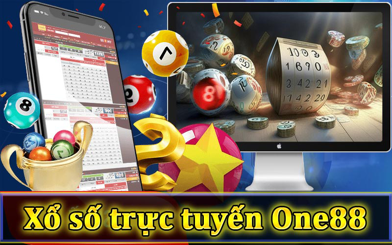
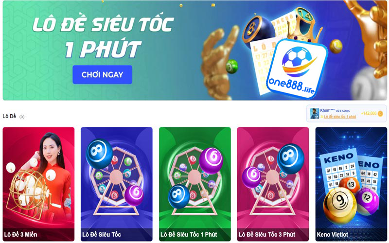
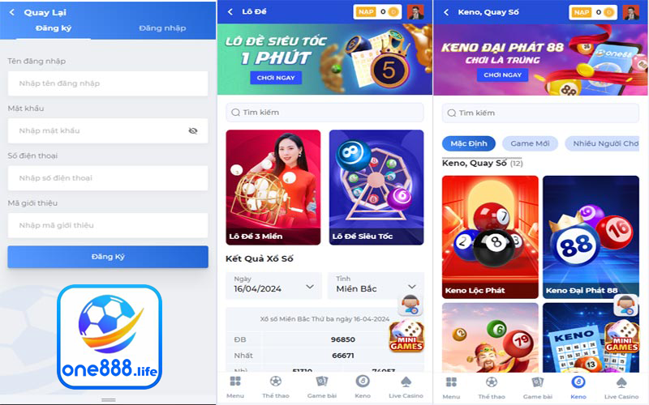

Xổ số trực tuyến One888 – Cách đánh xổ số kiến thiết trực tuyến 3 miền

Xổ số trực tuyến One888 là một lựa chọn phổ biến điển hình cho những người yêu thích lô đề online. Với nền tảng hiện đại và đa dạng các loại hình xổ số, người chơi có thể tận hưởng trải nghiệm đánh xổ số kiến thiết trực tuyến 3 miền một cách tiện lợi và thú vị trên trang game nhà cái này với những con số tỷ lệ trả thưởng hấp dẫn.
Đôi nét về xổ số trực tuyến One888

Xổ số trực tuyến là một trong những hình thức tham gia nền tảng xổ số trực tuyến hàng đầu cả nước hiện nay. Với giao diện thân thiện và dễ sử dụng, nhà cái One888 mang đến trải nghiệm trò chơi thuận tiện và đơn giản cho người chơi. Đặc biệt, xổ số trực tuyến One888 cung cấp nhiều loại hình xổ số khác nhau từ các miền Bắc, Trung đến Nam, cho phép người chơi dễ dàng truy cập tham gia vào các trò chơi yêu thích của mình mọi lúc, mọi nơi.
Một điểm đáng chú ý là One888 được biết đến với tỷ lệ trả thưởng cao hơn so với thực tế ngoài đời thực, tạo điều kiện thuận lợi cho người chơi có cơ hội trúng thưởng lớn. Hơn nữa, quá trình trả thưởng trên nền tảng này diễn ra nhanh chóng và hiệu quả, giúp người chơi nhận được tiền thưởng một cách nhanh chóng sau khi trúng giải. Không chỉ vậy, xổ số trực tuyến One888 còn cập nhật kết quả xổ số nhanh nhất, đảm bảo tính chính xác và minh bạch cho người chơi.
Điều kiện để tham gia chơi xổ số tại One888
Đối với bất kỳ hình thức nào tham gia cá cược trực tuyến, người chơi đề phải tuân thủ nền hợp pháp hóa trên cùng một nền tảng đó. Tương tự, mỗi một nhà cái kinh doanh cá cược online được các tổ chức pháp lý chứng nhận nền tảng hợp pháp cũng có những điều khoản và điều kiện riêng đảm bảo tính minh bạch và an toàn đối với khách hàng của mình.
Dưới đây là một số điều kiện để người chơi có thể tham gia chơi xổ số trực tuyến One888 một cách thuận lợi và dễ dàng:
- Về độ tuổi: Người chơi cần phải đạt độ tuổi pháp luật quy định để được tham gia vào các trò chơi xổ số trực tuyến tại One888. Thường là từ 18 tuổi trở lên theo điều kiện pháp luật chung nhà nước quy định hiện hành.
- Tài khoản: Bất kỳ nhà cái nào cũng cho ra quy chế chung và việc sở hữu một tài khoản đăng nhập game là điều không thể bỏ qua. Người chơi cần đăng ký một tài khoản trên nền tảng của One888 và cung cấp một số thông tin cá nhân xác minh chính xác.
- Tuân thủ quy định điều khoản và điều kiện của One888: Được ví nhưng xiền xích ràng buộc trung gian giữa người chơi và nhà cái nhằm đảm bảo môi trước cá cược minh bạch, an toàn. Người chơi cần tuân thủ các quy định, điều khoản và điều kiện của One888, bao gồm cả quy định về an toàn và bảo mật thông tin cá nhận người chơi xổ số trực tuyến.
- Nạp tiền: Người chơi cần nạp tiền vào tài khoản của mình đề có thể tham gia đặt cược trong các trò chơi xổ số trực tuyến One888 cung cấp trên website hoặc ứng dụng cá cược nhà cái này cung cấp.
- Đảm bảo tính hợp lệ: Người chơi cần đảm bảo rằng mọi hoạt động đặt cược của họ là hợp lệ và tuân thủ luật pháp của quốc gia, nơi họ đang sinh sống.
Trong lô đề, hình thức nuôi lô khung là một chiến lược phổ biến mà người chơi thường áp dụng để tăng cơ hội trúng thưởng. Có nhiều cách tiếp cận khác nhau được liệt kê dưới đây để quý vị có thể tham khảo như sau:
Cách tham gia cá cược xổ số trực tuyến One888 tỷ lệ 1:95
Muốn tham gia cá cược xổ số trực tuyến One888 với tỷ lệ 1:95, bạn cần trải qua một số bước đơn giản. Với giao diện thân thiện và tiện lợi, One888 mang đến trải nghiệm đặt cược dễ dàng và thú vị cho người chơi.

Để tham gia cá cược xổ số trực tuyến trên One888 với tỷ lệ 1:95, bạn có thể thực hiện các bước sau:
- Bước 1: Đăng nhập hoặc đăng ký tài khoản cá cược One888
- Trước tiên, bạn cần sở hữu một tài khoản trên trang game nhà cái One888. Nếu đã sở hữu cho mình một tài khoản game, bạn lựa chọn phương thức đăng nhập vào tài khoản của mình. Nếu chưa có, đăng ký tài khoản mới trên trang web của One888 và xác nhận thông tin cá nhân của bạn.
- Bước 2: Nạp tiền vào tài khoản và chọn loại hình xổ số trực tuyến
- Sau khi đăng nhập hoặc đăng ký tài khoản thành công, để có thể chơi game xổ số trực tuyến One888 một cách thuận lợi, người chơi hãy thực hiện nạp tiền vào tài khoản của bạn bằng cách chọn phương thức thanh toán phù hợp và nhập số tiền muốn nạp hoặc có thể lựa chọn hình thức đăng ký trải nghiệm 100k tại nhà cái.
- Trên giao diện của One888, người chơi chọn mục Lô đề hoặc Keno, Quay số. Đồn thời, chọn loại hình xổ số mà bạn muốn tham gia.
- Bước 3: Chọn số và mức cược phù hợp
- Chọn các con số bạn muốn đặt cược và chọn mức cược phù hợp với bạn. Lưu ý kiểm tra tỷ lệ cược để đảm bảo bạn hiểu rõ về cách tính thưởng.
- Bước 4: Xác nhận con số rồi đặt cược
- Sau khi chọn số và mức cược, bạn cần kiểm tra lại thông tin đặt cược của mình trên giao diện của xổ số trực tuyến One888. Đảm bảo rằng các thông tin về số lượng và mức đặt cược là chính xác. Sau khi đã kiểm tra kỹ lưỡng, bạn chỉ cần nhấn vào nút “Xác nhận đặt cược” để hoàn thành quá trình đặt cược.
- Bước 5: Theo dõi kết quả trả thưởng xổ số
- Bạn phải vào trang web hoặc ứng dụng di động của One888 sau thời gian quy định. Tại đó, bạn có thể kiểm tra kết quả xổ số và xem xem bạn có trúng thưởng hay không. Các kết quả thường được cập nhật nhanh chóng và đáng tin cậy, giúp bạn theo dõi và biết ngay kết quả của mình.
Nhớ rằng việc tham gia cá cược luôn mang lại nguy cơ, vì vậy hãy chơi một cách có trách nhiệm và chỉ đặt cược số tiền mà bạn có thể tự xử lý được trên.